箱ひげ図
箱ひげ図（ボックスプロット）はヒストグラムと同様にデータの分布を確認するために利用される基本的なグラフです。ヒストグラムと最も異なるのは要約統計量に基づいたグラフを描く点です。

箱ひげ図には様々なバリエーションがありますがR の箱ひげ図は下表の要約統計量を元に描かれます。
| 項目 | 計算式など | 図中での位置 |
|---|---|---|
| 上側極値 | 外れ値を除いた最大値注1 | 上側のひげ |
| 上側25%点 | 第三四分位点 | 箱の上側 |
| 中央値 | 第二四分位点 | 箱内の太線 |
| 下側25%点 | 第一四分位点 | 箱の下側 |
| 下側極値 | 外れ値を除いた最小値注2 | 下側のひげ |
注1 \(上側25\%点 + 1.5 \times IQR\)注3以下の範囲で最も大きな値
注2 \(下側25\%点 - 1.5 \times IQR\)注3以上の範囲で最も小さな値
注3 \(IQR = 上側25\%点 - 下側25\%点\)
上側極値と下側極値の外側にあるデータは外れ値になります。
必要なパッケージ
本ページのコードを実行するには標準パッケージ以外に以下の追加パッケージを読み込んでおく必要があります。
| Packages | Description |
|---|---|
| tidyverse | Easily Install and Load the ‘Tidyverse’ |
対象データ
標準パッケージに組み込まれている以下のデータセットを用います。
| Dataset | Package |
|---|---|
| iris | datasets |
標準パッケージを用いる方法
標準パッケージを用いて箱ひげ図を描くにはboxplot関数を用います。boxplot関数は引数の指定方法を変えることで二種類の箱ひげ図を描くことができます。
箱ひげ図
一つのベクトル変数を指定することで（単一の）箱ひげ図を描くことができます。
boxplot(iris$Sepal.Length, main = "Sepal.Length")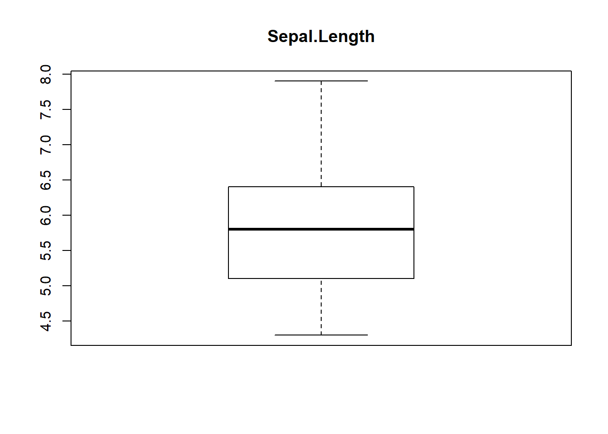
層別箱ひげ図
因子を用いて層別の箱ひげ図を描く場合にはformula形式で引数を指定してください。この場合、データはデータフレーム型であることが好ましいです。
boxplot(Sepal.Length ~ Species, data = iris, main = "層別箱ひげ図")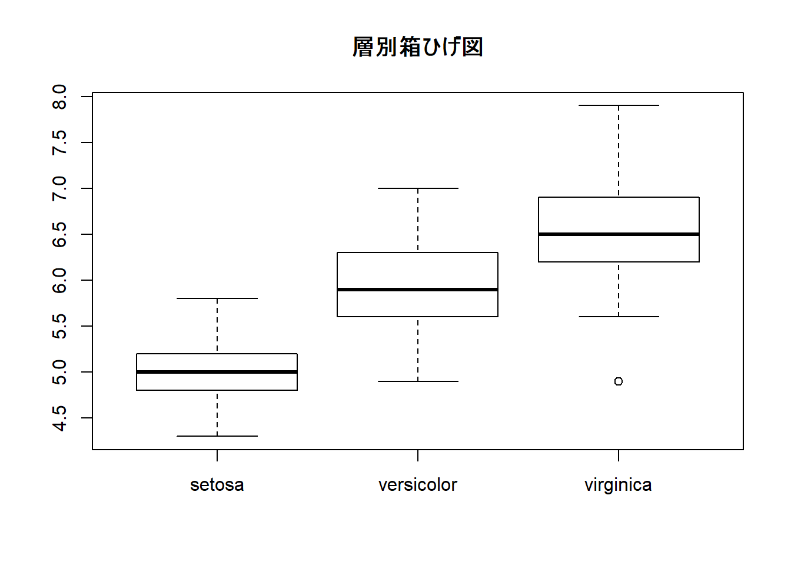
箱ひげ図と頻度分布
箱ひげ図は前述のように要約統計量を用いていますのでデータの分布が見えません。ドットチャートを上書きすることでヒストグラムのような分布を描くことができます。
boxplot(Sepal.Length ~ Species, data = iris)
stripchart(Sepal.Length ~ Species, data = iris, vertical = TRUE,
method = "stack", add = TRUE, col = "red")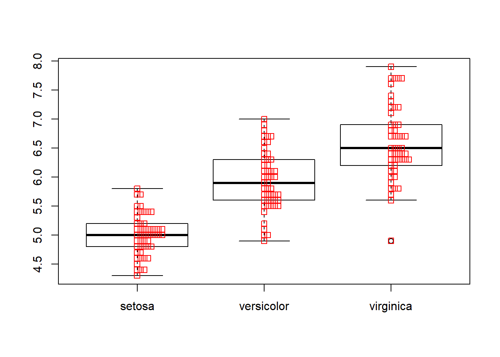
全体箱ひげ図と層別箱ひげ図
層別データと層別していないデータをひとつの箱ひげ図として表示する場合は多少手間が必要ですが下記のようなコードで描くことができます。
# データセットを代入しておくとデータセット名が変わっても処理を変えずに済みます
x <- iris
x.lab = "Species"
y.lab = "Petal.Length"
# 層別データを抽出する
type <- unique(x$Species)
# 層別データを描く際の色を設定する
cols <- RColorBrewer::brewer.pal(length(type), "Accent")
# 横軸の範囲を設定する(全データ用＋層別用＋1)
x.range = length(type) + 2
# 空の描画を行う(boxplotは高水準描画関数なので空の描画で軸を用意しておく)
plot(0, 0, type = "n", xlim = range(0:x.range), ylim = range(x[, -5]),
xlab = x.lab, ylab = y.lab, axes = FALSE)
# 最初に全データに対する箱ひげ図を描画する（上書き）
with(x, boxplot(Petal.Length, add = TRUE))
# 次に層別のデータに対する箱ひげ図を描画する（上書き）
for (i in 1:length(type)) {
with(x, boxplot(Petal.Length[Species == type[i]],
at = i + 1, col = cols[i], add = TRUE))
}
# 最後に横軸名を描画する(除く全データ)
axis(1, at = 1:length(type)+1, labels = type, tick = TRUE)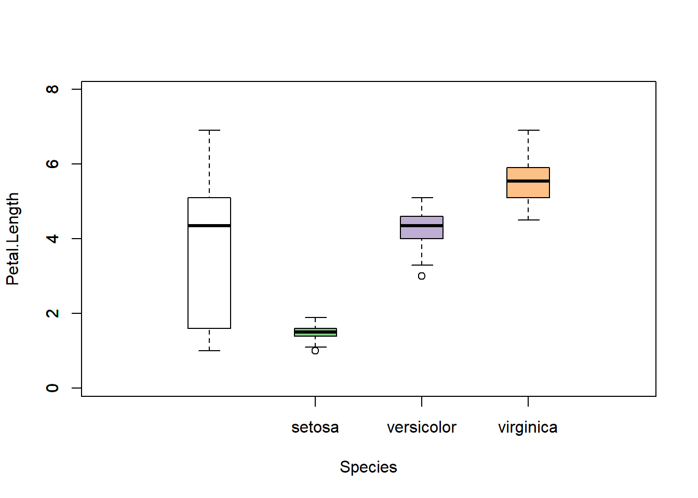
なお、データ自体を加工して描くことも可能です。
追加パッケージを用いる方法
ggplot2パッケージにはggplot2::geom_boxplotという箱ひげ図を描くための関数が用意されています。
箱ひげ図
ggplot2::geom_boxplot関数は層別で描くことを前提としているため単一の箱ひげ図を描きたい場合は引数xに任意の数値（ダミー）を指定してください。なおboxplot関数と異なりひげ（whisker）の先端の横棒は描画されません。
iris %>%
ggplot2::ggplot(ggplot2::aes(x = 0, y = Sepal.Length)) +
ggplot2::geom_boxplot()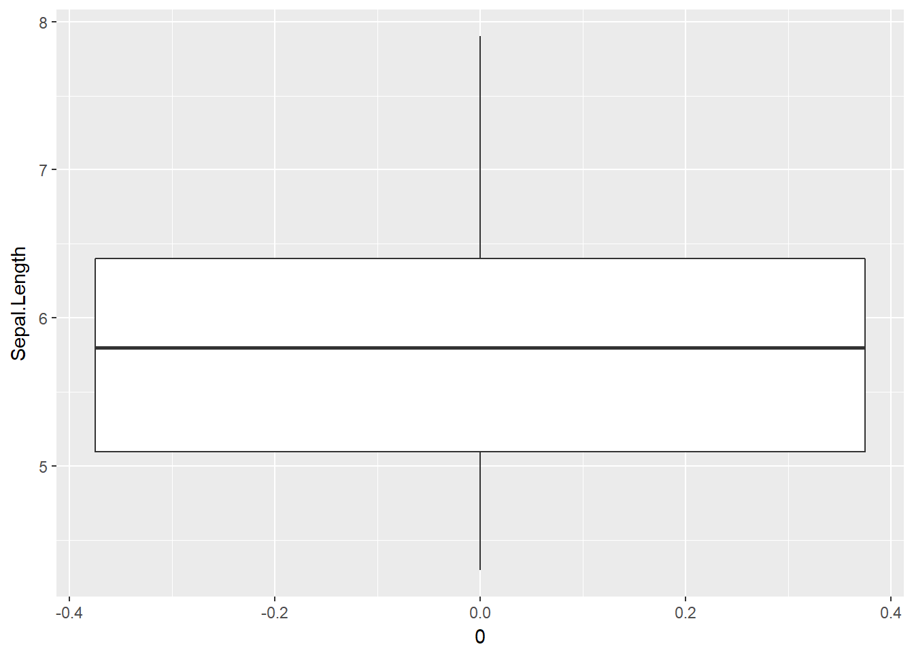
層別箱ひげ図
前述のようにggplot2::geom_boxplot関数は層別で描くことを前提としていますので、引数xに層別因子を指定するだけで層別箱ひげ図を描くことができます。
iris %>%
ggplot2::ggplot(ggplot2::aes(x = Species, y = Sepal.Length)) +
ggplot2::geom_boxplot()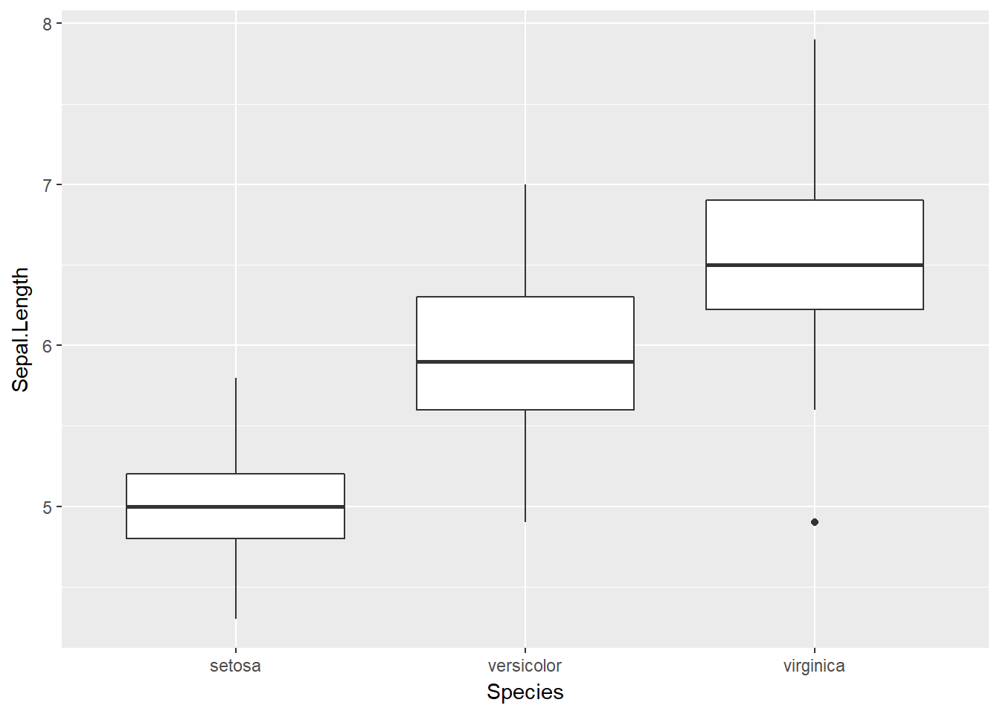
箱ひげ図と頻度分布
ggplot2パッケージを用いても箱ひげ図の上にggplot2::geom_dotplot関数を用いることでドットチャートを描くことができます。
iris %>%
ggplot2::ggplot(ggplot2::aes(x = Species, y = Sepal.Length)) +
ggplot2::geom_boxplot() +
ggplot2::geom_dotplot(binaxis = "y", dotsize = 0.75, stackdir = "up",
binwidth = 0.1)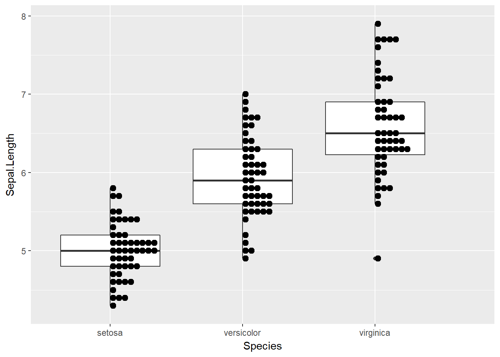
箱ひげ図と平均値
箱ひげ図は前述のように要約統計量（四分位値）を用いていますので平均値の値は図示されません。平均値の値を図示したい場合はggplot2::stat_summary関数を用います。
iris %>%
ggplot2::ggplot(ggplot2::aes(x = Species, y = Sepal.Length)) +
ggplot2::geom_boxplot() +
ggplot2::stat_summary(fun.y = mean, geom = "point", colour = "red")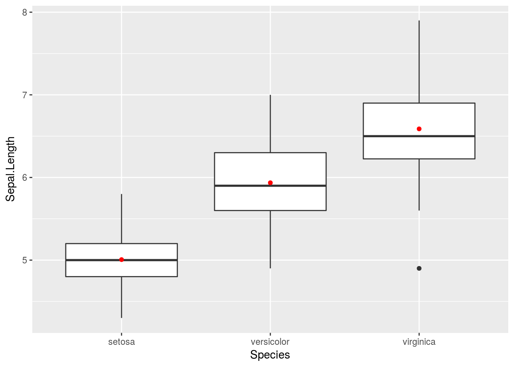
頻度分布と平均値の信頼区間
ggplot2では様々なアレンジが簡単にできます。前出の頻度分布と平均値、更に平均値の95%信頼区間を箱ひげ図に重ねてみます。
iris %>%
ggplot2::ggplot(ggplot2::aes(x = Species, y = Sepal.Length)) +
ggplot2::geom_boxplot() +
ggplot2::stat_summary(fun.data = mean_sdl, fun.args = list(mult = 1),
geom = "pointrange", position = position_nudge(0.05),
colour = "red") +
ggplot2::geom_dotplot(binaxis = "y", dotsize = 0.75, stackdir = "down",
binwidth = 0.1, position = position_nudge(-0.025))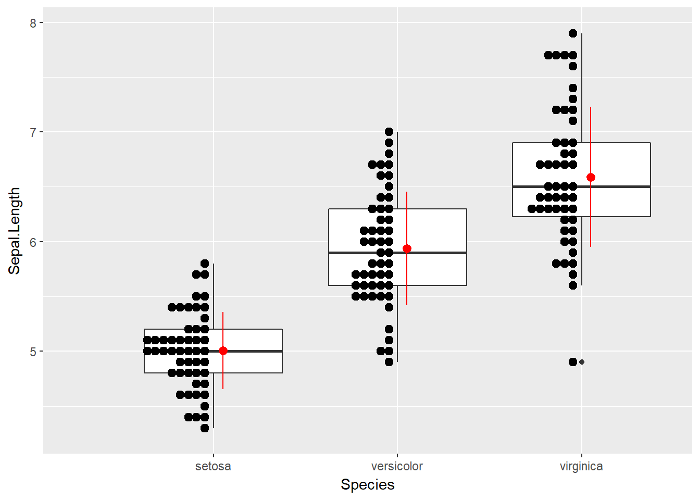
進化系？箱ひげ図
箱ひげ図は要約統計量（四分位値）を利用してるため頑健ではありますが、データの分布形状を見ることにはあまり適していません。そこで、箱ひげ図の特徴を利用しながらデータ分布の確率密度（カーネル密度推定）を表示させる進化系箱ひげ図とも言えるバイオリンプロットがあります。
バイオリンプロット
バイオリンプロット（バイオリン図）は前述のように箱ひげ図の箱の代わりにデータ分布の確率密度を中心線を挟んで対象にプロットしたものでggplot2::geom_violin関数を用いて描くことができます。なお、ggplot2::geom_violon関数での密度推定方法はデフォルトで“gaussian”注4が適用されます。
iris %>%
ggplot2::ggplot(ggplot2::aes(x = Species, y = Sepal.Length)) +
ggplot2::geom_violin()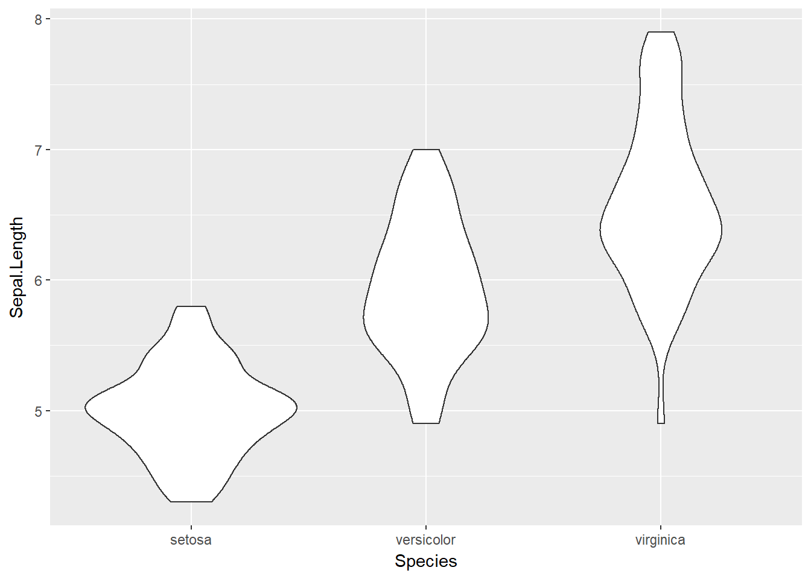
注4 密度推定にはdensity関数が利用され推定方法はデフォルトを含めて7種類から選択することができます
一般的なバイオリンプロットは確率密度に加えて四分位値が描かれることが多いです。四分位値を描く場合はdraw_quantilesオプションで描きたい四分位を指定してください。
iris %>%
ggplot2::ggplot(ggplot2::aes(x = Species, y = Sepal.Length)) +
ggplot2::geom_violin(draw_quantiles = c(0.25, 0.5, 0.75))
バイオリンプロットと平均値
四分位に加えて平均値をプロットしたい場合は、箱ひげ図の場合と同様にggplot2::stat_summary関数を用いてください。
iris %>%
ggplot2::ggplot(ggplot2::aes(x = Species, y = Sepal.Length)) +
ggplot2::geom_violin(draw_quantiles = c(0.25, 0.5, 0.75)) +
ggplot2::stat_summary(fun.y = mean, geom = "point", colour = "red")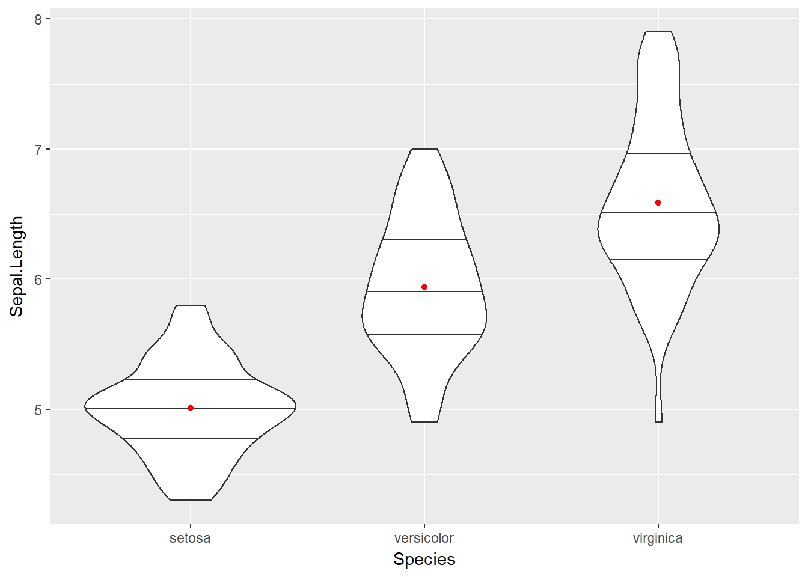
バイオリンプロットと箱ひげ図
見慣れた箱ひげ図の方がいいという場合はggplot2::geom_boxplot関数に引数widthを指定してください。加えてggplot2::stat_summary関数で平均値を描画することもできます。
iris %>%
ggplot2::ggplot(ggplot2::aes(x = Species, y = Sepal.Length)) +
ggplot2::geom_violin() +
ggplot2::geom_boxplot(width = 0.1) +
ggplot2::stat_summary(fun.y = mean, geom = "point", colour = "red")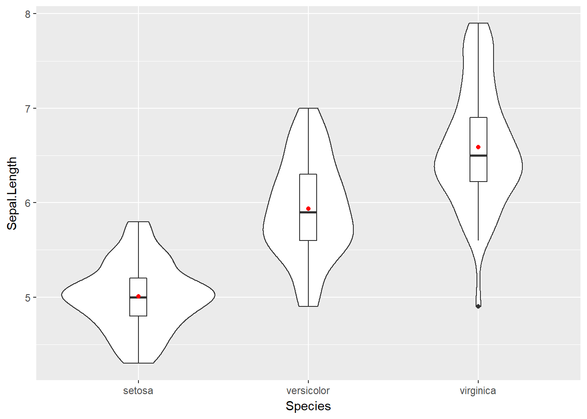
バイオリンプロットと頻度分布
やっぱり実際の頻度分布も見たいという場合は箱ひげ図の場合と同様にggplot2::geom_dotplot関数を用いてください。この時にpositionオプションで描画をオフセットさせると複数の描画を重ねても見やすいグラフにすることができます。
iris %>%
ggplot2::ggplot(ggplot2::aes(x = Species, y = Sepal.Length)) +
ggplot2::geom_violin(draw_quantiles = c(0.25, 0.5, 0.75)) +
ggplot2::stat_summary(fun.y = mean, geom = "point", colour = "red",
position = position_nudge(0.025)) +
ggplot2::geom_dotplot(binaxis = "y", dotsize = 0.5, stackdir = "down",
binwidth = 0.1, position = position_nudge(-0.025)) 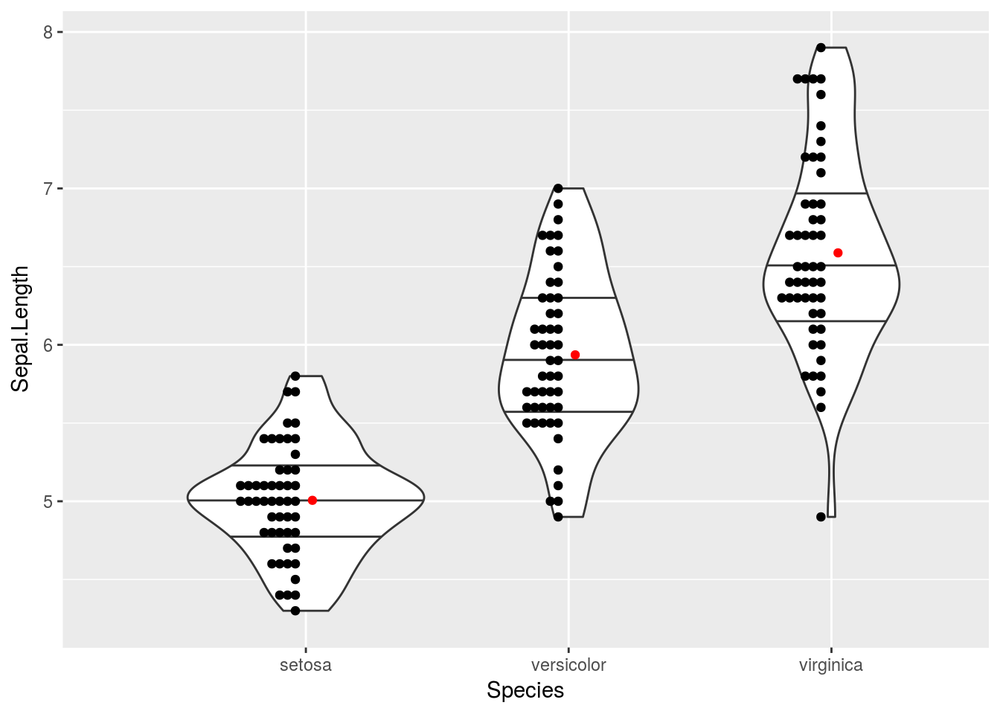
雨雲プロット
GitHubでgeom_flat_violinという関数のコード が公開されています。geom_flat_violine関数はバイオリンプロットを半分だけ描く関数です。このプロットとドットプロットを組み合わせることで雨雲のようなプロットを描くことができます。
iris %>%
ggplot2::ggplot(ggplot2::aes(x = Species, y = Sepal.Length)) +
geom_flat_violin() +
ggplot2::stat_summary(fun.y = mean, geom = "point", colour = "red",
position = position_nudge(0.025)) +
ggplot2::geom_dotplot(binaxis = "y", dotsize = 0.5, stackdir = "down",
binwidth = 0.1, position = position_nudge(-0.05)) +
ggplot2::coord_flip()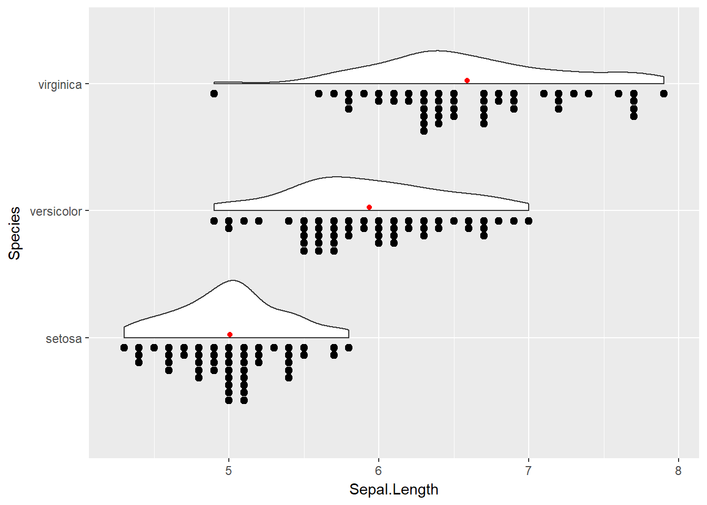
 CC BY-NC-SA 4.0 , Sampo Suzuki [2018-05-30 17:31(JST)]
CC BY-NC-SA 4.0 , Sampo Suzuki [2018-05-30 17:31(JST)]